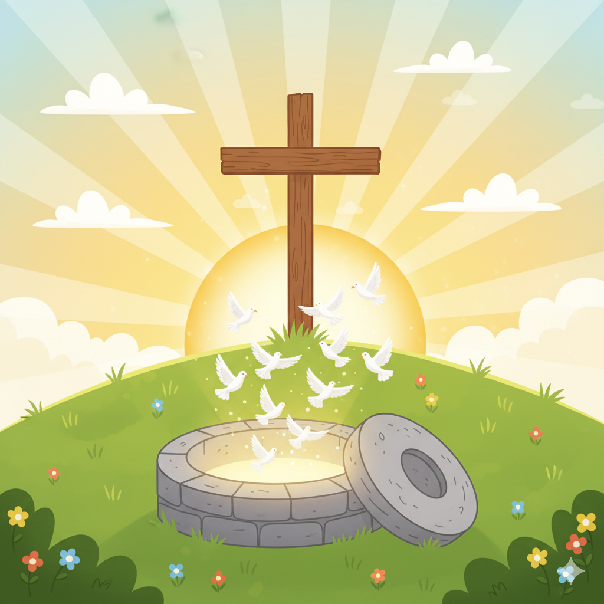

Creation
Once upon a time, God said, "Let there be light!" And there was light. He saw that it was good and separated the light from the darkness.
The Fall of Man

In a beautiful garden, there was a tree that God said not to eat from. But a sneaky serpent convinced them to eat the fruit.
Noah's Flood

Noah was a good man. God told him to build a big boat because He would send a flood to clean the world.
Abraham's Covenant

God made a promise to Abraham. He would have many children, and they would be a great nation.
Moses & The Exodus

Moses led the Israelites out of Egypt, where they were slaves. They crossed the Red Sea and went to the Promised Land.
David & Solomon's Kingdom

David was a great king. He built a strong kingdom and wrote beautiful songs. His son Solomon built a beautiful temple for God.
Prophets Foretelling the Messiah

The prophets told about a special person who would come to save the world. They wrote about His life and what He would do.
Birth of Jesus

Jesus was born in a stable because there was no room in the inn. Angels told shepherds about His birth.
Ministry of Jesus

Jesus healed the sick, fed the hungry, and taught many people. He showed them how to live a good life.
Crucifixion & Resurrection
Jesus was put on a cross and died. But on the third day, He rose from the dead!
Pentecost
The Holy Spirit came to the followers of Jesus. They spoke in different languages and told people about Jesus.
Spread of the Church

People started churches in many places. They shared the story of Jesus and helped others learn about Him.
Revelation
In the end, there will be a new heaven and a new earth. God will wipe away all tears, and there will be no more death or mourning or pain.